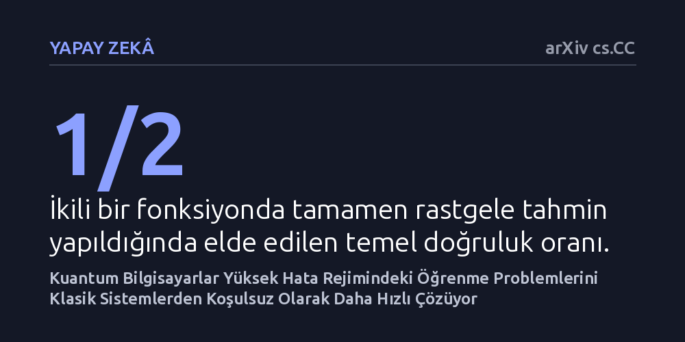

YAPAY-ZEKA · arXiv cs.CC · 2026-10-20
Çalışma, kuantum bilgisayarların makine öğrenmesi problemlerinde klasik sistemlere karşı koşulsuz bir üstünlük sağlayıp sağlayamayacağını inceliyor. Yazarlar, yüksek hata rejiminde kuantum algoritmalarının hiçbir çözülmemiş karmaşıklık varsayımına ihtiyaç duymadan klasik algoritmalardan üstün olduğunu matematiksel olarak kanıtlıyor.
Kuantum üstünlüğü tartışmaları çoğunlukla ispatlanmamış varsayımlara dayanırken, bu çalışma makine öğrenmesinde kuantum sistemlerin klasik bilgisayarlara koşulsuz üstünlük sağlayabildiğini kesinleştiriyor.

Kuantum bilgisayarların klasik donanımları geride bırakabileceği fikri kuramsal fizikte uzun süredir tartışılsa da bu üstünlüğü matematiksel olarak kesinleştirmek son derece güçtür. Kuantum algoritmalarının klasik sistemlere üstün olduğunu öne süren çalışmaların büyük kısmı, klasik bilgisayarların çözemediği varsayılan ancak bu yetersizliğin kesinleşmediği bazı matematiksel varsayımlara dayanır. Dolayısıyla klasik sistemlerin bir gün daha verimli bir yöntemle bu farkı kapatması teorik olarak mümkündür.
Hesaplamalı öğrenme teorisinde (PAC öğrenme) ise algoritmaların az sayıda veri örneğinden genel kurallar çıkarabilme kabiliyeti ölçülür. Burada temel amaç, karmaşık bir fonksiyonu kabul edilebilir bir hata payıyla ve makul sürede öğrenmektir. Kuantum hesaplamanın bu öğrenme sürecinde klasik sistemlere hiçbir açık varsayıma dayanmadan, yani koşulsuz biçimde üstün gelip gelemeyeceği temel bir açık soru olarak duruyordu.
Araştırmacı bu soruyu ele alırken fiziksel bir kuantum çipi çalıştırmak yerine kuramsal bilgisayar biliminin analitik ispat yöntemlerine başvurdu. Kuantum mekaniğinin süperpozisyon ve dalga girişimi gibi ilkeleri, klasik bilgisayarların milyarlarca adımla tarayabileceği veri dağılımlarını tek hamlede analiz etme potansiyeli taşır.
Çalışmada standart kuantum algoritmalarında doğrusal ilişkilere odaklanan Fourier örneklemesi yöntemi geliştirilerek ikinci dereceden (kuadratik) hipotezleri de kapsayacak biçimde genişletildi. Standart Fourier örneklemesi ilişkinin pozitif ya da negatif yönde olmasına duyarsız kalırken, kuantum dalga girişiminden faydalanılarak algoritmanın hedef fonksiyonla doğrudan örtüşen hipotezleri daha yüksek olasılıkla seçmesi sağlandı.
Elde edilen matematiksel ispat, yüksek hata oranının kabul edildiği bir öğrenme senaryosunda kuantum algoritmalarının klasik algoritmalara karşı süper-polinom düzeyinde üstün olduğunu gösterdi. Geliştirilen kuantum öğrenici, yalnızca rastgele kuantum örnekleri kullanarak hedef fonksiyonu rastgele tahminden (%50) biraz daha yüksek bir başarıyla kestirebilen klasik devreler üretebilmektedir.
Buna karşılık hiçbir klasik polinom zamanlı algoritma, verilere dilediği gibi soru yöneltebilse (üyelik sorguları yapabilse) dahi aynı başarı seviyesine makul bir olasılıkla ulaşamamaktadır. En çarpıcı taraf ise bu ayrımın P ve NP gibi ispatlanmamış hiçbir karmaşıklık hipotezine bağlanmadan, tamamen koşulsuz olarak ispatlanmış olmasıdır.
Bu bulgu, kuantum bilişimin makine öğrenmesi görevlerinde klasik bilgisayarların kesinlikle aşamayacağı teorik bir güç sınırını aştığını gösteriyor. Kuantum örneklerin sağladığı bilgi yapısı, klasik istatistiksel sorguların ötesine geçerek veri kalıplarını çok daha az adımla yakalayabilmektedir.
Öte yandan bu koşulsuz üstünlük şimdilik yalnızca hatanın görece yüksek olduğu rejimde geçerlidir. Çalışmada, hatanın çok küçük olmasının şart koşulduğu klasik öğrenme rejiminde benzer bir koşulsuz ayrım yapmanın NP ve BPP karmaşıklık sınıflarının ayrımını gerektireceği belirtilmektedir. Bu durum, pratikte yüksek doğruluk gerektiren her makine öğrenmesi problemine aynı avantajın doğrudan taşınamayacağını hatırlatmaktadır.